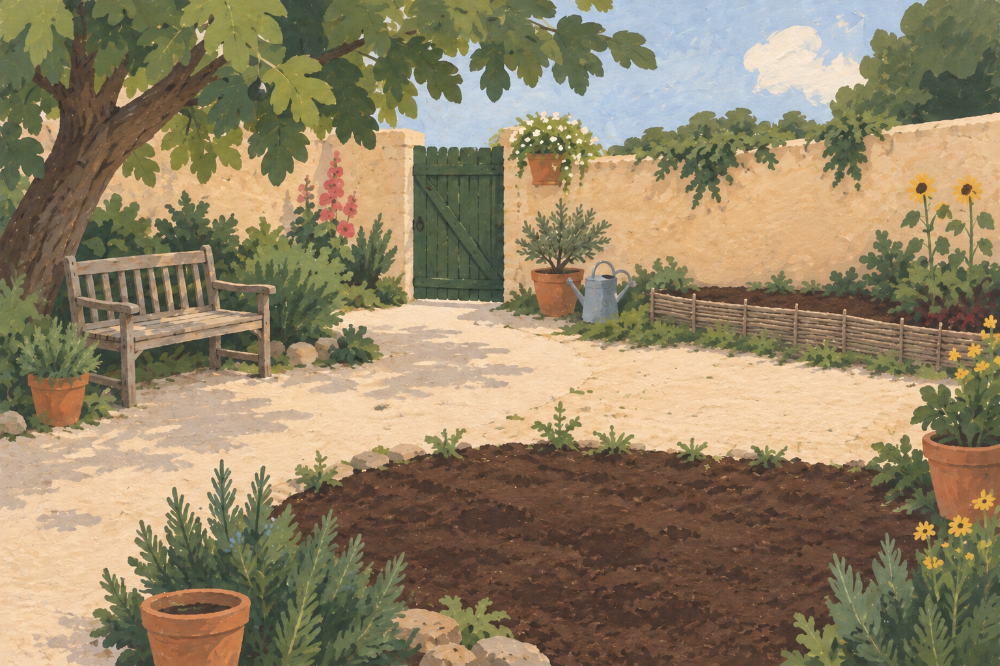

The Grief Garden

Pick herePlant here:
Plant a little of what he loved. Drag a packet into the soil. Or tap it, then a spot.
Pick something for his juice. Plant something for tomorrow.
In loving memory of Richard.
Our hearts sing for you forevermore.
About this garden
Richard loved juicing, farmers markets, his friends, and finding intimate underground music gatherings—whether in someone’s living room, on Third Street, at a warehouse, or in Chinatown in Oakland. He was a darling of a man and made the best damn juice. These are his recipes, handwritten by his dad.
Your growing ingredients stay in this browser. Saved on this device only; no account or cross-device sync.